The learner at home
Knows kana, has tried an app or two, and stops when lessons feel like filing. Wants Japanese that turns up in ordinary life.
Ajimi teaches the words in a recipe, then you cook with them.

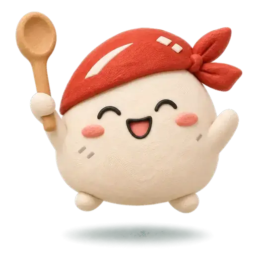
Most Japanese apps teach a word, test it, then move to the next one. The word never has a job to do. Ajimi gives it one. You learn うどん and ゆでる because the next screen asks you to boil the noodles.
Knows kana, has tried an app or two, and stops when lessons feel like filing. Wants Japanese that turns up in ordinary life.
Has a trip booked and a list of dishes. Wants to read a menu and follow what the cook is saying.
A review of 145 studies found people remember an action phrase better after performing it than after reading it. So you hold the pot.
Roberts, MacLeod and Fernandes, 2022Recalling a word a little later holds it longer than seeing it again. So the review comes after the cooking.
Roediger and Karpicke, 2006A word met in a clear setting is learned better than one met often. So every word arrives with its ingredient.
Webb, 2008These are reasons for the design. Ajimi has not been tested with participants yet.
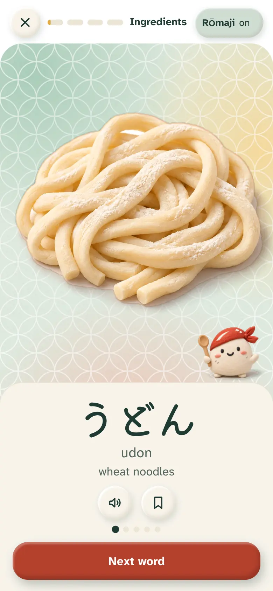
Meet each word with its ingredient. Save the ones you do not know.

Read the sentence, then do the verb. The verb is the only thing highlighted.
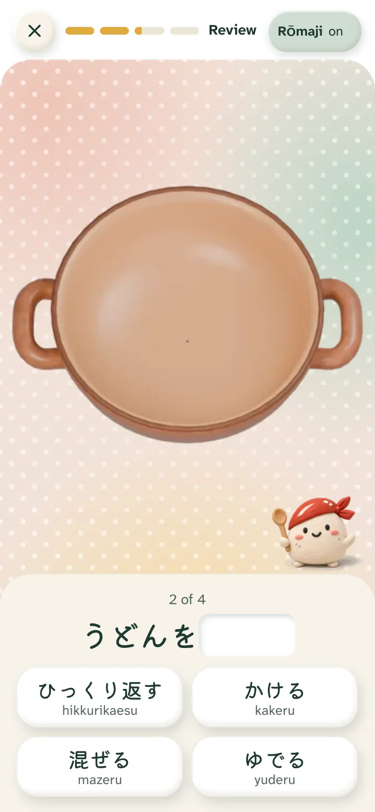
Fill the missing word. Saved words come first.

The finished bowl, Mochi’s verdict and every word you used.
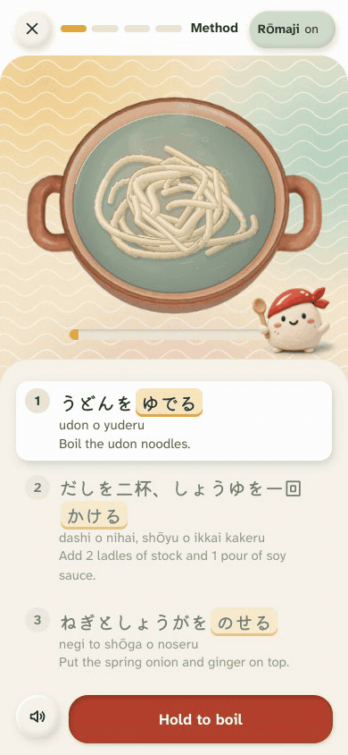
Pressing builds a rolling boil. Letting go lets the water settle. With reduced motion on, three presses do the same job, and the keyboard works throughout.
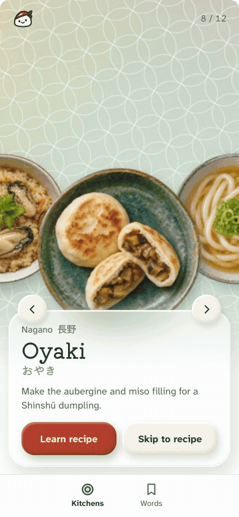
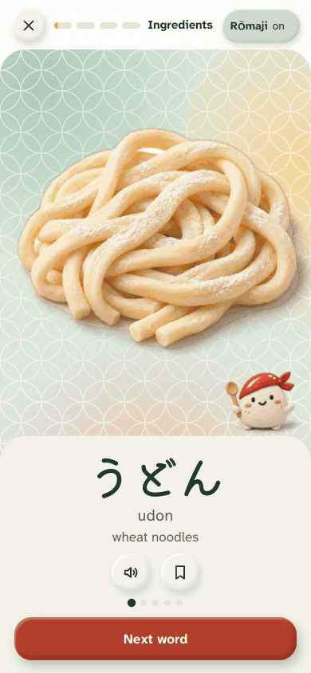
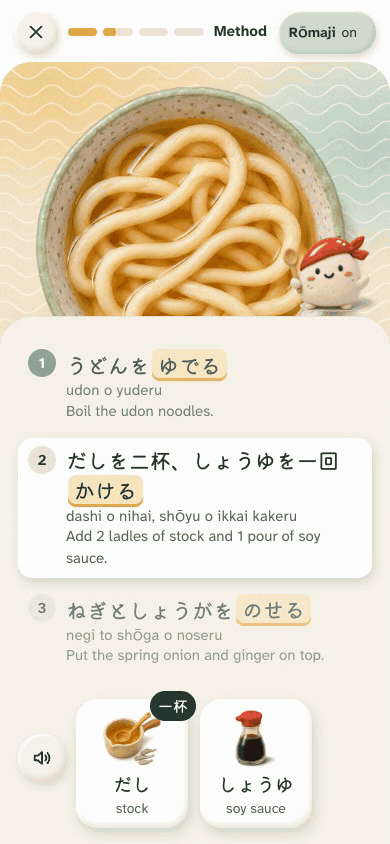
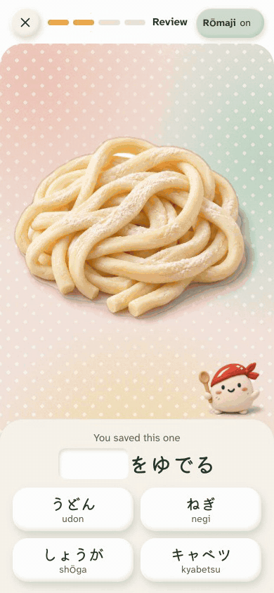
The first version had a character and no job for it. Ajimi means tasting as you cook, so Mochi became the taster. Two more jobs followed from that.
There is no score. Mochi tastes the bowl and tells you, in Japanese, how it went.

A wrong answer puffs Mochi up. It also keeps that word and asks you first next time.
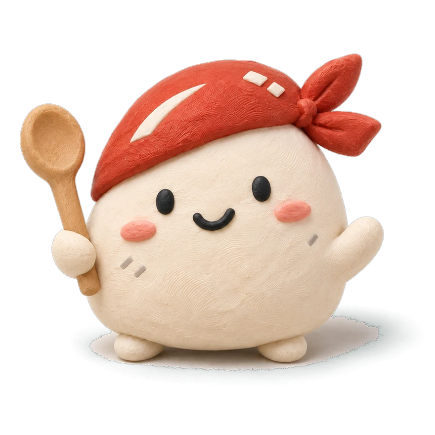
Tap Mochi on any screen. It says the word aloud, or removes one wrong answer.
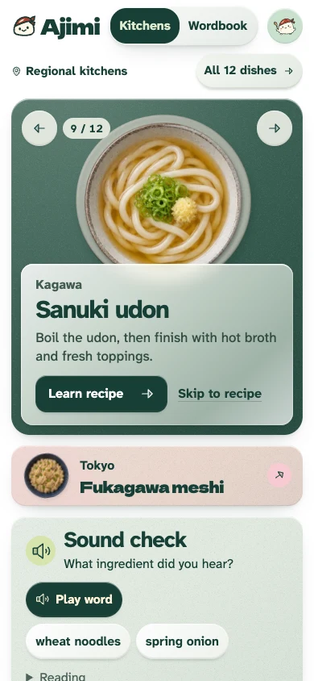
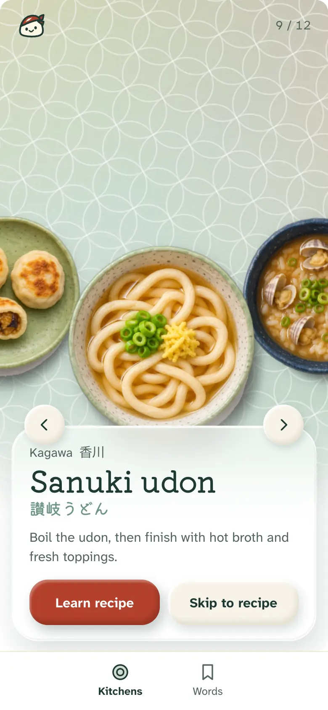

Every colour comes from the kitchen: the glaze on the wheel, the broth, Mochi’s headscarf. Vermilion is kept for the one thing you should press next.
ゆでる Kiwi Maru
Boil the udon noodles. Atkinson Hyperlegible Next
だしを二杯かける BIZ UDPGothic

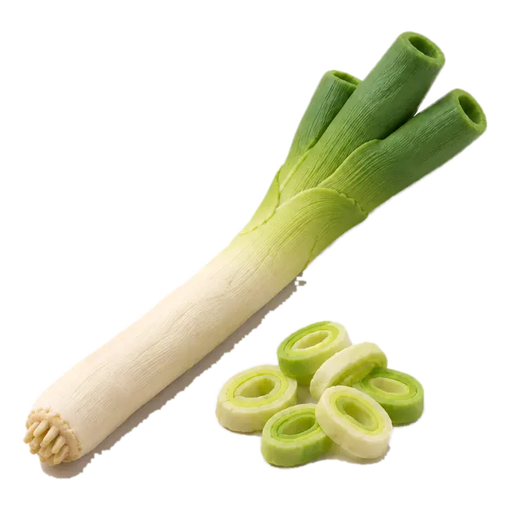

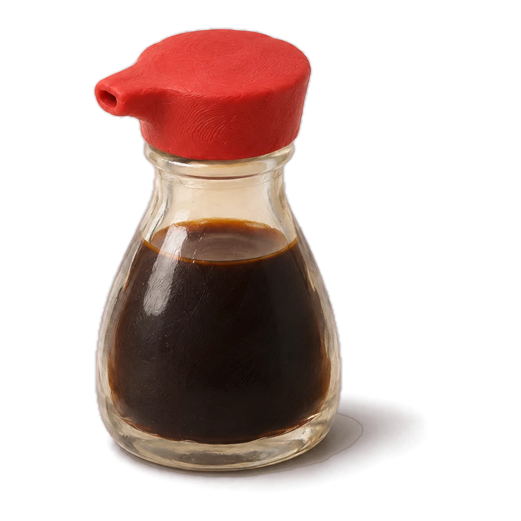
The food is clay, lit from the upper left, and every button casts its shadow the same way. Glass appears only where a panel passes over food.